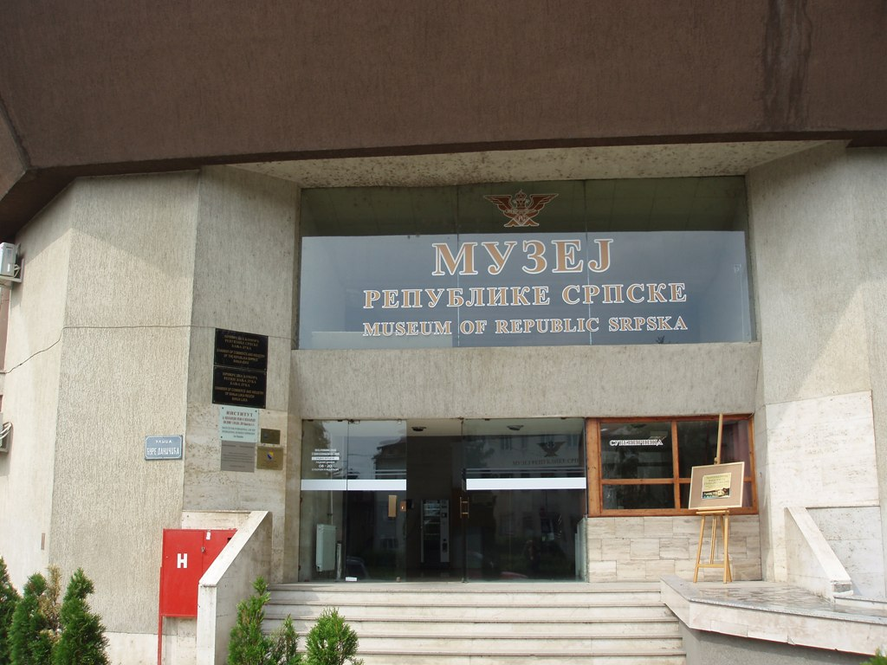
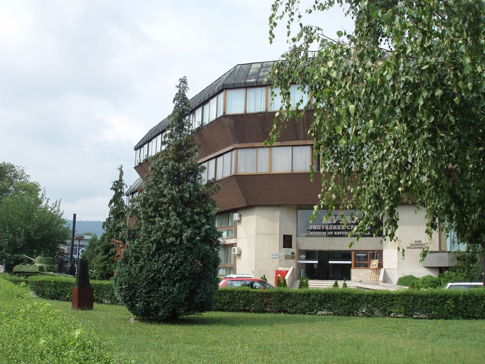

О Музеју
Музеј Републике Српске основан је 26. септембра 1930. године под називом Музеј Врбаске бановине. Први управник Музеја Врбаске бановине био је Спиридон Шпиро Боцарић, академски сликар из Будве. Током првих година рада, Боцарић је из околине Бањe Луке сакупио велики број етнографских предмета непроцјењиве историјске, националне и културне вриједности. Уз Етнолошку, током прве деценије постојања, с временом настају Историјска, Археолошка и Природњачка збирка. Музеј је неколико пута мијењао назив и простор, да би се 1981. године под називом Музеј Босанске крајине (од 1967. године) смјестио у простору Дома радничке солидарности гдје се и данас налази. Одлуком Владе Републике Српске, 14. новембра 1992. године преименован је у Музеј Републике Српске и проглашен централном установом заштите покретних културних добара.
Данас је Музеј јавна установа са седам организационих јединица:- Одјељење за материјалну културу у чијем саставу су:
- Одсјек за археологију
- Одсјек за историју
- Одсјек за етнологију и етнографију
- Одсјек за историју умјетности
- Природњачки одсјек
- Одјељење за нематеријалну културу
- Одјељење за документацију и дигитализацију
- Одјељење за конзервацију и рестаурацију у чијем саставу су:
- Атеље за конзервацију и рестаурацију сликарских дјела
- Атеље за конзервацију и рестаурацију текстила и коже
- Атеље за конзервацију и рестаурацију метала
- Атеље за конзервацију и рестаурацију камена, керамике, порцулана и стакла
- Атеље за конзервацију и рестаурацију дрвета
- Радионица ЗОО препаратора
- Одјељење за образовно-педагошки рад
- Одјељење за библиотечку и издавачку дјелатност
- Одјељење за заједничке послове.
- 
- 
-